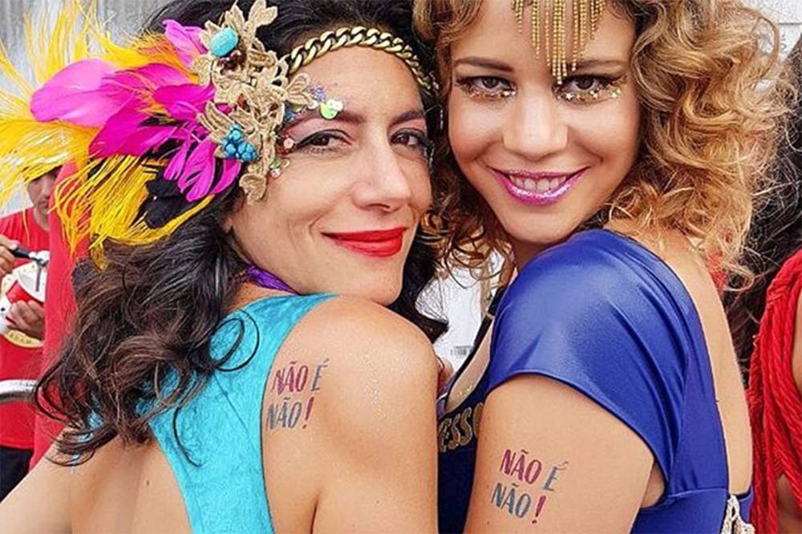

O que é assédio?
Assédio sexual é um crime previsto em lei, que consiste em constranger alguém com o intuito de obter vantagem sexual,
seja verbal ou fisicamente. O assédio sexual é um crime que deve ser combatido, pois fere a dignidade da pessoa humana.
O assédio sexual é uma realidade enfrentada por muitas mulheres no Brasil, em diversos ambientes, como no trabalho,
nas ruas e em espaços públicos. Pesquisas indicam que uma parcela significativa das mulheres brasileiras já vivenciou alguma forma de assédio.
Assédio no Carnaval
Durante o Carnaval, a grande concentração de pessoas, o consumo de álcool e o clima festivo podem criar situações de maior vulnerabilidade
para as mulheres. Pesquisas indicam que o número de casos de assédio sexual tende a aumentar nesse período. Muitas mulheres relatam que já
foram vítimas de assédio durante o Carnaval, seja em blocos de rua, festas ou desfiles de escolas de samba.
De acordo o artigo do agência Brasil do ano de 2024, sete em cada 10 mulheres têm medo de assédio no carnaval.
"No Brasil, país que, até a atualidade, tem sua imagem muito associada ao carnaval, metade (50%) das mulheres já foi vítima de assédio sexual
durante a festividade e 73% delas têm receio de passar por essa situação pela primeira vez ou novamente. De acordo com novo levantamento do
Instituto Locomotiva e do QuestionPro, essas proporções são ainda mais altas entre mulheres negras, chegando, respectivamente, a 52% e 75%"
Tipos de assédio
O assédio pode se manifestar de diversas formas, incluindo cantadas indesejadas, toques inapropriados, comentários sexuais ofensivos e perseguição.
O assédio moral também é uma forma de violência presente em diversos contextos, caracterizada por comportamentos que humilham e constrangem a vítima.
Como combater o assédio no Carnaval?
O combate ao assédio sexual no Carnaval deve envolver ações de prevenção, conscientização e punição dos agressores. É importante que as mulheres
saibam que não estão sozinhas e que existem mecanismos de denúncia e apoio disponíveis. Além disso, é fundamental que a sociedade como um todo se
mobilize.
O combate ao assédio durante o Carnaval envolve também uma série de estratégias e ações que visam garantir a segurança
e o respeito de todas as pessoas, especialmente as mulheres.
Algumas das principais iniciativas e medidas que têm sido adotadas:
"Não é Não":
Essa campanha é uma das mais importantes e amplamente divulgadas. Ela busca conscientizar sobre a importância do consentimento e
deixar claro que qualquer contato físico ou verbal indesejado é assédio. A campanha distribui materiais informativos, como panfletos,
adesivos e leques, com mensagens de conscientização.
A campanha é citada em um artigo de midiorama.com, do ano de 2018:
"Esse é bem simples: não é não! Não é porque a moça está com uma roupa mais curta que você pode chegar tocando no corpo dela, puxar pelo braço,
chegar por trás, chamá-la de “gostosa” ou tomar qualquer outra atitude que invada o espaço dela. Aliás, isso serve para todo mundo. Viu uma moça/rapaz
que te atraiu? Chegue nela(e) com educação, converse, jogue o seu charme, mas caso ela(e) fique desconfortável ou disser não, pare por aí e leve seu
bloco para outra avenida. Vamos fazer desse, um #CarnavalSemAssédio."

Artigo midiorama, artistas se moblizam a favor da campanha contra assédio "não é não"
Canais de denúncia:
Disponibilização de canais de denúncia acessíveis e eficientes, como a Central de Atendimento à Mulher - Ligue 180,
que também está disponível no WhatsApp. Criação de espaços de acolhimento e apoio para vítimas de assédio.
Para finalizar, uma famosa frase Brasileira, "todo cuidado é pouco", afinal...Girls Just Want to Have Fun